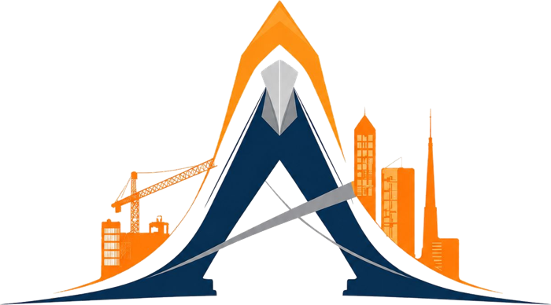

Abhiyantri Setu is a digital construction and infrastructure ecosystem. From a leaking bathroom to a new home, a shop fit-out to an industrial water plant, Abhiyantri Setu connects the people who need building work done with the people who do it well.
The platform brings together homeowners, businesses, builders, contractors, skilled tradespeople, engineers, architects, material suppliers and equipment owners in one place. A customer describes a requirement once, receives quotations from verified providers, compares them clearly, and hires with confidence. The same platform is designed to grow into material procurement, equipment rental, professional consultation and business infrastructure services.
At the heart of Abhiyantri Setu is a simple belief: building should not depend on who you happen to know. Every family and every business deserves access to reliable professionals, honest prices and work that is done right.
Abhiyantri Setu begins in Greater Noida, Uttar Pradesh, where it can know every provider and every job closely, with the ambition to serve all of India.
| Building Connections | Bringing customers, professionals, contractors and suppliers together on one trusted platform. |
| Engineering Progress | Better-built homes and buildings through verified expertise, clear standards and technology. |
| One Platform. The Entire Construction Ecosystem. | Discover, compare, procure, build and maintain, all in one place. |
Abhiyantri Setu is a trust-building brand. Construction in India runs on word of mouth, verbal quotes and guesswork. Abhiyantri Setu replaces guesswork with clarity: verified providers, written scope, comparable quotations and accountability from start to finish. Engineering discipline, not shortcuts.
To connect customers, professionals, contractors, suppliers and businesses through technology, transparency and reliable service delivery, simplifying the entire construction and infrastructure lifecycle.
To become India's most trusted and comprehensive digital ecosystem for construction, engineering and infrastructure services.
| 01 | Trust & Transparency Verified providers, itemised quotations and fees disclosed upfront. |
| 02 | Engineering Excellence Work guided by engineering standards, not shortcuts. |
| 03 | Customer First Clear communication, quick response and support after the job is done. |
| 04 | Complete Ecosystem Services, professionals, materials, equipment and business solutions on one platform. |
| 05 | Professional Empowerment Digital identity, steady work and fair payment for skilled tradespeople and contractors. |
| 06 | Technology-Driven Digital requirements, quotes and records that make building simpler for everyone. |
One platform for the full life of a building: plan, build, equip and maintain.
If Abhiyantri Setu were a person, it would be the trusted site engineer in the family: knowledgeable, straightforward, and always on your side.
Professional, warm and clear. Short sentences. Facts over adjectives. Speak to customers in Hindi and English as they prefer. Do focus on trust, quality, transparency and the right way to build. Don't use hype words such as "India's No. 1" or "best in the world", make claims without evidence, criticise competitors, or promise outcomes the provider controls.
Abhiyantri Setu Digital Infra Pvt. Ltd. · Founder: Avinish Tripathi
336, Udyog Kendra-II, Ecotech-3, Greater Noida, Uttar Pradesh 201306
info@abhiyantrisetu.com · +91 92895 53069 · www.abhiyantrisetu.com